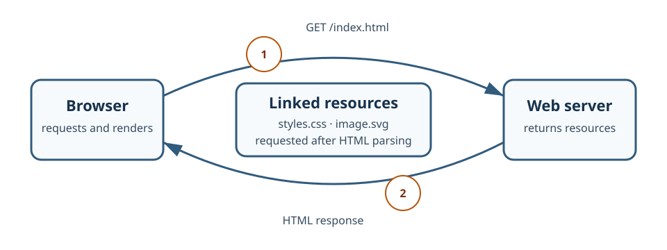

The Browser Team
Every web page is built by three technologies that each do one job.
- HTML
- HTML holds the content of a page and describes what each piece of it means, such as a heading, a paragraph, a list, or a link. It gives the browser and assistive technology a structure to work with before any styling exists.
- CSS
- CSS controls how that structure is presented: colors, spacing, typography, and layout at different window sizes. It changes the appearance of content without changing what the content is.
- JavaScript
- JavaScript adds behavior, letting the page respond to the user, change after it has loaded, and request more data from a server. It runs in the browser after the page structure is available.
One Page Request

When you enter an address, the browser looks up the server's IP
address through DNS and opens a connection to it. It then sends an
HTTP GET request for index.html.
The server responds with a status code and the HTML file. The browser parses that HTML from top to bottom and builds a tree of elements that represents the document.
While parsing, the browser finds references to other files — the
styles.css stylesheet and the
web-request-cycle.svg image — and sends a separate
request for each one.
Once the stylesheet arrives, the browser matches its rules to the elements, calculates the position and size of everything, and paints the result to the screen. The page is now displayed.
Resources
These references from MDN Web Docs cover the fundamentals in more depth.